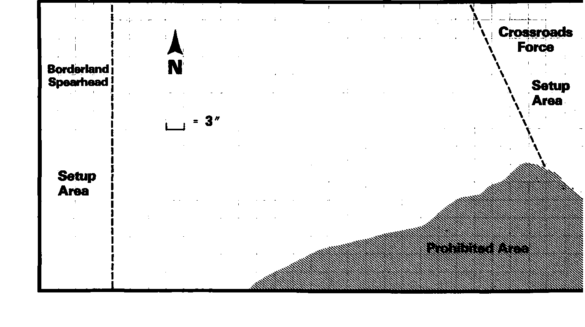

基础战役：十字路口之战 Basic Game Scenario: Battle at the Crossroads
最初报告像寻常怪物袭击，至多规模稍大。很快大家才知道，一支庞大的怪物军队已在荒野集结，席卷边境。孤立的小聚落接连陷落，难民涌向他们以为安全的内陆。
兽人、食人魔、地精组成的先头旅正快速逼近重要路口。若路口被断，许多难民会落入邪恶大军手中，被俘，甚至更惨。
格拉鲁斯小镇的正规武士与民兵前来阻击。开战前数小时，附近矮人、半身人聚落也派来援军。大家搁置小争执，联手作战。
沉重足音已从地平线后传来。这支小军能否消灭先锋，为难民争取在怪物主力到来前逃走的机会？
正义方为“十字路口守军”Crossroads Force，邪恶方为“边境先锋”Borderland Spearhead。按附图布置战场，邪恶方先部署，正义方后部署，可用任何合法队形。以彩纸、胶带或线标出禁止进入区，任何部队或个体都不能进入。
只用基础规则，中级、高级规则不适用。最后仍有至少一个模型留场的一方获胜，敌军须全部阵亡或溃逃离场；若同归于尽，正义方胜。白昼，天气良好。

上一节：战役册 Scenario Book
下一节：中级战役：莱恩之战 Intermediate Game Scenario: Battle of Lairn